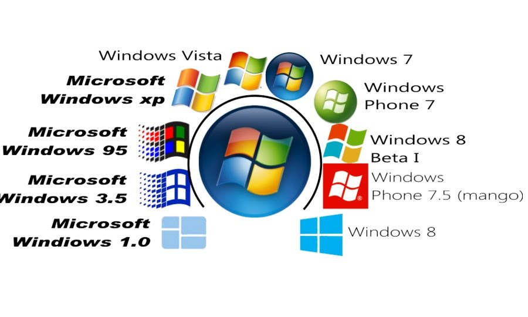

los primeros días de los ordenadores, los sistemas operativos, el software que controla las aplicaciones y recursos del sistema, no existían. Tampoco existía el software propiamente dicho. Los ordenadores se programaban conectando manualmente circuitos de cálculo y cambiando el cableado para cada nuevo cálculo a realizar. Esto cambió en 1945, cuando John Von Neumann inventó un ordenador que almacenaba en memoria instrucciones que indicaban a las unidades de cálculo lo que debía hacer. El 21 de junio de 1948 se ejecutó el primer programa en una máquina llamada Baby en la Universidad de Manchester... y nació el software. Sin embargo, los ordenadores seguían ejecutando
único programa cada vez, y los operadores aún tenían que cargar cada programa y sus datos correspondientes en memoria desde cintas o tarjetas perforadas, ejecutar el programa y después repetir todo el proceso para el programa siguiente. Y aunque esto resultaba más rápido que cambiar el cableado, se seguía perdiendo una gran cantidad de tiempo de ordenador. A comienzos de los años cincuenta, las empresas que utilizaban ordenadores estaban buscando formas de resolver ese problema. En 1955, algunos programadores en el Centro de Investigaciones de General Motors encontraron una solución para su ordenador IBM 701: un programa monitor de procesos batch que permitía a los operadores incluir una serie de trabajos en una única cinta magnética. Éste fue el primer paso hacia un sistema operativo en toda escala. Los fabricantes de ordenadores comenzaron pronto a ofrecer sus propios monitores de proceso batch. A comienzos de los años sesenta, comenzaron a añadir las que se convertirían en funciones de sistema operativo críticas. El Burroughs 5000 Master Control Program ofrecía memoria virtual y la capacidad de ejecutar varios procesos simultáneamente. El sistema EXEC 1 de Univac asignaba memoria, planificaba el tiempo de CPU y atendía a las peticiones de entrada/salida de datos. Y el OS/360 de IBM permitía que un mismo software funcionara en una variedad de máquinas diferentes. En 1963, un equipo del Massachusetts Institute of Technology dirigido por Fernando Corbato desarrolló el sistema CTSS (Compatible Time Sharing System), que fue el primer sistema operativo práctico que permitió a varios usuarios ejecutar varios programas diferentes desde terminales. Una parte importante de ese equipo se trasladó pronto a trabajar en un sistema operativo bastante más ambicioso: Multics, un proyecto conjunto con General Electric y los Laboratorios Bell de AT&T que ofrecía un sistema de ficheros de estructura en árbol, una estructura por capas o niveles y muchas otras funciones OS modernas. Aunque AT&T se apartó del proyecto Multics en 1969, sus programadores Ken Thompson y Dennis Ritchie comenzaron a desarrollar su propia versión reducida de Multics, a la que llamaron Unix. Unix era fácil de trasladar a nuevas arquitecturas de ordenador y adquirió popularidad en las universidades porque AT&T puso la codificación fuente de Unix a disposición de estudiantes, para que pudieran estudiarla. Para los años ochenta, Unix había dado lugar a una generación de estaciones de trabajo y había desplazado a muchos sistemas operativos ya existentes. Entretanto, a mitad de los años setenta comenzaron a llegar los primeros ordenadores personales de escritorio, con sistemas operativos que eran poco más que los monitores de proceso de veinte años antes. Cuando IBM comenzó a vender PCs en 1981, ofreció varios sistemas operativos, pero el más económico y popular fue el PC DOS, suministrado por una pequeña compañía conocida como Microsoft.